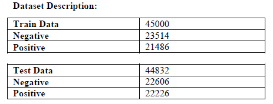
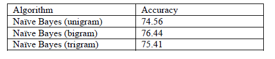

SENTIMENT ANALYSIS ON TWITTER
DATA: THEORY AND PRACTICE
RAHUL R KALLIL
RJ College of Arts, Science and
Commerce
rahulkallil2@gmail.com
ABSTRACT
This paper focuses on analysis of Twitter data, which include sentiment analysis for the tweets posted in Twitter. Social networks are the main resources to gather information about people’s opinion and sentiments towards different topics as they spend hours daily on social media and share their opinion.
There has been lot of work in the field of sentiment analysis of twitter data.
In this paper, we provide a survey and a comparative analyses of existing techniques for opinion mining like machine learning and lexicon-based approaches,
Using various machine learning
algorithms like Naive Bayes, we provide research on twitter data streams.
Keywords: Opinion Mining, Text Mining, Social
Media, Sentiment Analysis, Twitter
Social media platform as the data source
are categorize into three general categories: blogs, micro-blogging sites, and
review site [12-15]. Among these categories, Twitter, a microblogging site is
highly popular with over 500 million users around the world.
It allows users to use a short text
within a limit of 140 characters as their posts (also called tweets). Twitter sees a daily stream of
more than 400 million tweets.
These tweets include from remaining
socially connected to their friends, family members and co-workers, to updates
of wider interest about current affairs, encompassing all kinds of information.
The topics of these tweets range widely
from the simple, such as “what I’m doing right now,” to the thematic, such as
“football games”.
Twitter also categorizes tweets and
trends according to region and on its web interface it displays the most recent
tweets as feeds.
As a social-networking service,
Twitter features two social models called “following” and ‘Hashtags’. Following is a model
wherein a user is allowed to choose any other users that she
wants to follow. The one she follows is her friend, and she is the follower. A
follower can follow any user without any permission or reciprocating by
following her back. A follower receives all the updates of her friends [4].
Users can also add tags for the tweets. On Twitter the tag is called “hashtag”, and begins with sign “#”. Hash ‘#’, followed by the trend-name, is to identify and group tweets about a particular trending topic. The Hashtags generally are telegram style word(s) description without spaces and attempts to summarize the trend.
Different types of tweets and
hashtags make Twitter data stream more readable.
Twitter also
provides its data in the form of API for developers to create applications that
require data gathered by tweets and trends.
There are three types of tweets: reply,
retweet and normal tweet. Reply is a message to any user with the sign “@”
followed by the target user's name at the beginning of the tweet. Retweet is a
message which user shares from friends to her followers which begins with the
sign “RT”. Normal tweet are the tweets except replies and retweets.
In this section, we provide background
on Twitter relevant to this work, describing the syntax utilized by its users,
and the way they interact with each other and spread information. Then, we get
into detail of how Twitter presents and deals with trends (defined as trending topics by the microblogging
system), which we utilize as the input to our trend classifier and understand
the sentiment of the trending tweets.
Sentiment analysis (SA) tells user
whether the information about the product is satisfactory or not before they
buy it.
2. REVIEW AND DISCUSSION
Sentiment Analysis
Sentiment analysis can be defined as a process that automates mining of attitudes, opinions, views and emotions from text, speech, tweets and database sources through Natural Language Processing (NLP). Sentiment analysis involves classifying opinions in text into categories like "positive" or "negative" or "neutral".
Pak and Paroubek(2010) proposed a model to classify the tweets as
objective, positive and negative. They created a twitter corpus by collecting
tweets using Twitter API. Using that corpus, they developed a sentiment
classifier based on the multinomial Naive Bayes method that uses features like
N-gram and POS-tags. The training set they used was less efficient since it
contains only tweets having emoticons.
Parikh and Movassate(2009) implemented two models, a Naive Bayes bigram model and a Maximum Entropy model to classify tweets. They found that the Naive Bayes classifiers worked much better than the Maximum Entropy model.
Go and L.Huang
(2009) proposed a solution for sentiment analysis for twitter data by using
distant supervision, in which they build models using Naive Bayes, Maximum
Entropy and Support Vector Machines (SVM). Their feature space consisted of
unigrams, bigrams and POS. They concluded that SVM outperformed other models
and that unigram were more effective as features.
3. APPROACHES FOR SENTIMENT ANALYSIS
Opinion mining (sentiment extraction) is employed on Twitter posts by means of following techniques
1. Lexical analysis
2. Machine learning based analysis
3.1 Lexical analysis
The input text is converted to tokens by the Tokenizer. Every new token encountered is then matched for the lexicon in the dictionary. If there is a positive match, the score is added to the total pool of score for the input text. For instance if “dramatic” is a positive match in the dictionary then the total score of the text is incremented. Other-wise the score is decremented or the word is tagged as negative.
3.2 Machine learning based analysis
Following are the phases required for sentiment analysis of twitter data:
3.2.1 Data Collecting – There are three possible ways to
collect Twitter data for research as follows.
Ø Application Program Interfaces (APIs):
Twitter provides two types of APIs such as search API and stream API
Ø Data repositories such as UCI,
Friendster, Kdnuggets, and SNAP, Kaggle
Ø Start with downloading and caching the
sentiment dictionary & Download twitter testing data sets, input it in to
the program.
The link to download the dataset from
Stanford development program:
http://cs.stanford.edu/people/alecmgo/trainingandtestdata.zip
This data consists of 4 million tweets
categorized as positive and negative.
3.2 Pre-processing – The collected data is raw data. In order to apply classifier it is necessary to pre-process the raw data. In this stage, the acquired data is cleaned and made ready for feeding it into the classifier. Cleaning includes extraction of keywords and symbols. For instance – Emoticons are the smiley used in textual form to represent emotions e.g. “:-)”, “:)” etc and Removing retweets:
Many of the tweets were the same; they
were what Twitter calls a `retweet'. Since a retweet does not take as much
thought as an original tweet we decided to remove the retweets as to prevent a
bias in the data. If several columns in our term document matrix were
identical, we removed all but one of those columns.
The pre-processing task involves:
1. Decompress slang words (Omg for Oh my God, ttyl for Talk to you later)
2. Make the case uniform(either lowercase or Uppercase)
3. Remove un-necessary white spaces and tabs
4. Remove retweets
5. Remove all URLs (e.g. www.xyz.com), hash tags (e.g. #topic), targets (@username)
6. Correct the spellings; sequence of repeated characters is to be handled
7. Replace all the emoticons with their sentiment.
8. Remove all punctuations, symbols, numbers
9. Remove Stop Words
10. Expand Acronyms (we can use an acronym dictionary)
11. Remove Non-English Tweets
3.3 Training Data –
In the training data, a collection of tagged corpora is provided.. Training the classifier makes it easier for future predictions for unknown data. We can figure out
Words And Their Frequencies, Parts Of Speech Tags ,Opinion
Words And Phrases , Position Of Term, Negation
Features:
Generally, unigrams (single word phrases), bi-grams (two consecutive phrases), tri-grams (three consecutive phrases) are selected as feature vectors. There are a variety of proposed features namely number of positive words, number of negative words,
A hand-tagged collection of data is prepared by most commonly used crowd-sourcing method. This data is the fuel for the classifier; it will be fed to the algorithm for learning purpose.
3.4 Classification – This is the heart of the whole technique. Depending upon the requirement of the application SVM or Naïve Bayes is deployed for analysis. The classifier (after completing the training) is ready to be deployed to the real time tweets/text for sentiment extraction purpose.
3.5 Results – Results are plotted based on the type of representation selected i.e. charts, graphs, etc. Performance tuning is done prior to the release of the algorithm
Accuracy is reported to vary from 63% to 80% depending upon the combination of various features selected.
4. METHODOLOGY AND
RESULTS
In this paper, we used python to
implement sentimental analysis. Some packages have utilized including tweepy and textblob. We can install the
required libraries by following commands:
• pip install tweepy
• pip install textblob
The second step is downloading the
dictionary by running the following command:
python -m textblob.download_corpora.
The textblob
is a python library for text processing and it uses NLTK for natural language
processing [6]. Corpora is a large and structured set of texts which we need
for analyzing tweets.
5. RESULTS AND DISCUSSION
The twitter dataset is publicly made
available by Stanford University. Analyses were done on this labelled datasets
using various feature extraction technique. We used the framework where the
pre-processor is applied to the raw sentences which make it more appropriate to
understand. Further, the different machine learning techniques trains the
dataset with feature vectors and then the semantic analysis offers a large set
of synonyms and similarity which provides the polarity of the content.
Table 1: Negative and Positive sentiment
score of Training data

Following are the details on most informative features after the classifier is executed on train data.
sad = True neg : pos = 37.6 : 1.0
worst = True neg :pos = 32.4 : 1.0
crying = True neg : pos = 24.7 : 1.0
fml = True neg : pos = 24.1 : 1.0
hurts = True neg : pos = 21.2 : 1.0
awful = True neg : pos = 21.1 : 1.0
ugh. = True
neg :pos = 20.4 : 1.0
Effect of Stop words
When Naive Bayes was run, it gave an
accuracy of 73.65 percent, which is considered as the baseline result.
When stop words were removed and Naive
Bayes was run, it gave an accuracy of 74.56
percent. Following table shows the accuracy obtained at different sizes for the
Naïve Bayes with stop words removed and using pre-processed data and based on
unigram model.
sad = True neg : pos = 27.6 : 1.0
awful = True neg : pos = 20.3 : 1.0
ugh = True neg : pos = 19.3 : 1.0
poor = True neg : pos = 19.3 : 1.0
sucks = True neg : pos = 18.7 : 1.0
upset = True neg : pos = 18.0 : 1.0
argh = True neg : pos = 17.3 : 1.0
battery = True neg : pos
= 16.6 : 1.0
This shows that stop words really affect
the predictions. Thus removal of stop words makes a lot of difference to the
accuracy.
Effect of Bigram:
Bigram uses a combination of two words
as a feature. Bigram effectively captures some features in the data that
unigram fails to capture. For example, words like ‟not sad‟,
‟not good‟ clearly say that the sentiment is negative. This effect
can be clearly seen from the increase in accuracy from 74.56(Unigram) to 76.44
percent which is almost a 2% increase.
The most informative features for Naive Bayes with Bigrams as features:
('so', 'sad') = True neg :pos = 55.2 : 1.0
sad. = True
neg :pos = 44.2 : 1.0
('i', 'lost')
= True neg
:pos = 24.7 : 1.0
('miss', 'him') = True neg :pos = 24.1 : 1.0
Effect of using Trigram.
Running Naïve Bayes using Trigrams,
bigrams and unigrams together gave an accuracy of 75.41 percent which is less
than the accuracy obtained when Bigrams were used as a feature.
Hence for further analysis, the trigrams
are not considered as they do not have a notice able impact on the accuracy.
The most informative features for Naive Bayes with Trigrams as features.:
('so', 'sad') = True neg :pos = 59.1 : 1.0
('lost', 'my') = True neg :pos = 38.9 : 1.0
('i', 'miss', 'my') = True neg :pos = 36.9 : 1.0
('going', 'to', 'miss') = True neg
:pos = 28.5 : 1.0
('happy', "mother's", 'day') =
True pos :neg = 25.0 : 1.0
Table 2. Accuracy of Naive Bayes Algorithm

CONCLUSION
In a survey conducted by [6], comparison
of all approaches has showed that best results have been observed from machine
learning approaches, and least by lexical approaches. However, without any
proper training of a classifier in machine learning approach results may
deteriorate drastically.
We focused on Twitter as and have
implemented the python program to implement sentimental analysis.
Research results show that machine
learning methods, such as SVM and naive Bayes have the highest accuracy and can
be regarded as the baseline learning methods, while lexicon-based methods are
very effective in some cases, which require little effort in human-labelled
document.
APPENDIX
Table 1: Negative and Positive sentiment
score of Training data
Table
2. Accuracy of Naive Bayes Algorithm
REFERENCES
[1]
H. Bagheri and M. J. Islam, “Twitter Sentiment
Analysis”.
[2]
M. Desai and M. A. Mehta, “A Hybrid Classification Algorithm to Classify
Engineering Students Problems and Perks”, vol. 6, no. 2, pp. 73-81, Jan. 2016.
[3]
G. Gautam and D. Yadav, “Sentiment analysis of
twitter data using machine learning approaches and semantic analysis”, Jan.
2014.
[4]
“Feature Extraction for Sentiment Classification on Twitter Data”, vol. 5, no.
2, pp. 2183-2189, Jan. 2016.
[5]
M. Karanasou, A. Ampla, C. Doulkeridis, and M. Halkidi,
“Scalable and Real-Time Sentiment Analysis of Twitter Data”, Jan. 2016.
[6]
V. A. and S. Sonawane, “Sentiment Analysis of Twitter
Data: A Survey of Techniques”, vol. 139, no. 11, pp. 5-15.